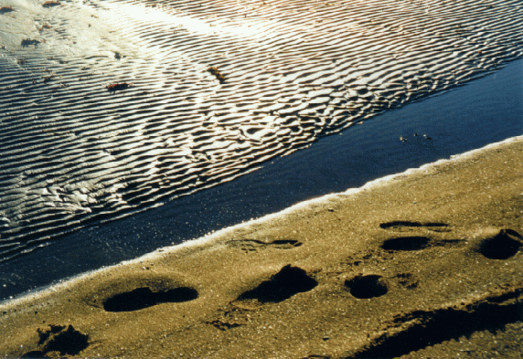

Se volete sapere come mi guadagno la pagnotta, andate a vedere
la mia Pagina Ufficiale... (If you
want to know how I "draw my tucker from the world", go see my Official
Web Page...)

Viaggi viaggetti viaggioni
Travels travels travels
Avevo un tempo
una finestra sul Lemano...
I once had a window on Lake Geneva...
Basler Morgenstreich
(auf Italienisch...)
Carnival in Basel (in Italian...)